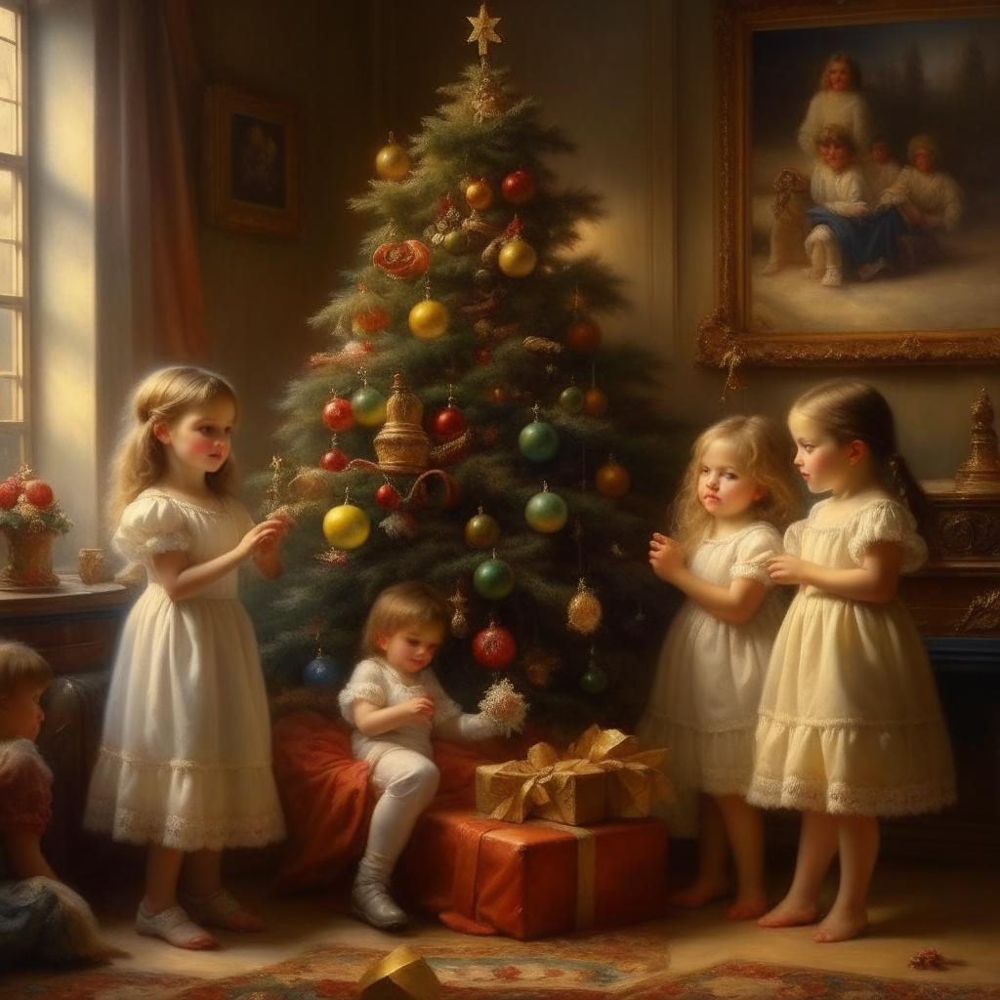

Ель.
Ганс Христиан Андерсен
В лесу стояла чудесная елочка. Место у нее было хорошее, воздуха и света вдоволь; кругом же росли подруги постарше — и ели, и сосны. Елочке ужасно хотелось поскорее вырасти; она не думала ни о теплом солнышке, ни о свежем воздухе, не было ей дела и до болтливых крестьянских ребятишек, что собирали по лесу землянику и малину; набрав полные корзиночки или нанизав ягоды, словно бусы, на тонкие прутики, они присаживались под елочку отдохнуть и всегда говорили:
— Вот славная елочка! Хорошенькая, маленькая!
Таких речей деревце и слушать не хотело.
Прошел год, и у елочки прибавилось одно коленце, прошел еще год, прибавилось еще одно — так, по числу коленцев, и можно узнать, сколько дереву лет.
— Ах, если бы я была такой же большой, как другие деревья! — вздыхала елочка. — Тогда бы и я широко раскинула свои ветви, высоко подняла голову, и мне бы видно было далеко-далеко вокруг! Птицы свили бы в моих ветвях гнезда, и я при ветре так же важно кивала бы головой, как другие!
И ни солнышко, ни пение птичек, ни розовые утренние и вечерние облака не доставляли ей ни малейшего удовольствия.
Стояла зима; земля была устлана сверкающим снежным ковром; по снегу нет-нет да пробегал заяц и иногда даже перепрыгивал через елочку — вот обида! Но прошло еще две зимы, и к третьей деревце подросло уже настолько, что зайцу приходилось обходить его кругом.
«Да, расти, расти и поскорее сделаться большим, старым деревом — что может быть лучше этого!» — думалось елочке.
Каждую осень в лесу появлялись дровосеки и рубили самые большие деревья. Елочка каждый раз дрожала от страха при виде падавших на землю с шумом и треском огромных деревьев. Их очищали от ветвей, и они валялись на земле такими голыми, длинными и тонкими. Едва можно было узнать их! Потом их укладывали на дровни и увозили из леса.
Куда? Зачем?
Весною, когда прилетели ласточки и аисты, деревце спросило у них:
— Не знаете ли, куда повезли те деревья? Не встречали ли вы их? Ласточки ничего не знали, но один из аистов подумал, кивнул головой и сказал:
— Да, пожалуй! Я встречал на море, по пути из Египта, много новых кораблей с великолепными высокими мачтами. От них пахло елью и сосной. Вот где они!
— Ах, поскорей бы и мне вырасти да пуститься в море! А каково это море, на что оно похоже?
— Ну, это долго рассказывать! — ответил аист и улетел.
— Радуйся своей юности! — говорили елочке солнечные лучи. — Радуйся своему здоровому росту, своей молодости и жизненным силам!
И ветер целовал дерево, роса проливала над ним слезы, но ель ничего этого не ценила.
Незадолго до Рождества срубили несколько совсем молоденьких елок; некоторые из них были даже меньше нашей елочки, которой так хотелось поскорее вырасти. Все срубленные деревца были прехорошенькие; их не очищали от ветвей, а прямо уложили на дровни и увезли из леса.
— Куда? — спросила ель. — Они не больше меня, одна даже меньше. И почему на них оставили все ветви? Куда их повезли?
— Мы знаем! Мы знаем! — прочирикали воробьи. — Мы были в городе и заглядывали в окна! Мы знаем, куда их повезли! Они попадут в такую честь, что и сказать нельзя! Мы заглядывали в окна и видели! Их ставят посреди теплой комнаты и украшают чудеснейшими вещами: золочеными яблоками, медовыми пряниками и тысячами свечей!
— А потом?.. — спросила ель, дрожа всеми ветвями. — А потом?.. Что было с ними потом?
— А больше мы ничего не видали! Но это было бесподобно!
— Может быть, и я пойду такою же блестящею дорогой! — радовалась ель. — Это получше, чем плавать по морю! Ах, я просто изнываю от тоски и нетерпения! Хоть бы поскорее пришло Рождество! Теперь и я стала такою же высокою и раскидистою, как те, что были срублены в прошлом году! Ах, если б я уже лежала на дровнях! Ах, если б я уже стояла, разубранная всеми этими прелестями, в теплой комнате! А потом что?.. Потом, верно, будет еще лучше, иначе зачем бы и наряжать меня!.. Только что именно? Ах, как я тоскую и рвусь отсюда! Просто и сама не знаю, что со мной!
— Радуйся нам! — сказали ей воздух и солнечный свет. — Радуйся своей юности и лесному приволью!
Но она и не думала радоваться, а все росла да росла. И зиму, и лето стояла она в своем зеленом уборе, и все, кто видел ее, говорили: «Вот чудесное деревце!» Подошло, наконец, и Рождество, и елочку срубили первую. Жгучая боль и тоска не дали ей даже и подумать о будущем счастье; грустно было расставаться с родным лесом, с тем уголком, где она выросла: она ведь знала, что никогда больше не увидит своих милых подруг — елей и сосен, кустов, цветов, а может быть, даже и птичек! Как тяжело, как грустно!..
Деревце пришло в себя только тогда, когда очутилось вместе с другими деревьями на дворе и услышало возле себя чей-то голос:
— Чудесная елка! Такую-то нам и нужно!
Явились двое разодетых слуг, взяли елку и внесли ее в огромную великолепную залу. По стенам висели портреты, а на большой кафельной печке стояли китайские вазы со львами на крышках; повсюду были расставлены кресла-качалки, шелковые диваны и большие столы, заваленные альбомами, книжками и игрушками на несколько сот далеров — так, по крайней мере, говорили дети. Елку посадили в большую кадку с песком, обернули кадку зеленою материей и поставили на пестрый ковер. Как трепетала елочка! Что-то теперь будет? Явились слуги и молодые девушки и стали наряжать ее. Вот на ветвях повисли полные сластей маленькие сетки, вырезанные из цветной бумаги, золоченые яблоки и орехи и закачались куклы — ни дать ни взять живые человечки; таких елка еще и не видывала. Наконец к ветвям прикрепили сотни разноцветных маленьких свечек, а к самой верхушке елки — большую звезду из сусального золота. Ну просто глаза разбегались, глядя на все это великолепие!
— Как заблестит, засияет елка вечером, когда зажгутся свечки! — сказали все.
«Ах! — подумала елка, — хоть бы поскорее настал вечер и зажгли свечки! А что же будет потом? Не явятся ли сюда из лесу, чтобы полюбоваться на меня, другие деревья? Не прилетят ли к окошкам воробьи? Или, может быть, я врасту в эту кадку и буду стоять тут такою нарядной и зиму и лето?»
Да, много она знала!.. От напряженного ожидания у нее даже заболела кора, а это для дерева так же неприятно, как для нас головная боль.
Но вот зажгли свечи. Что за блеск, что за роскошь! Елка задрожала всеми ветвями, одна из свечек подпалила зеленые иглы, и елочка пребольно обожглась.
— Ай-ай! — закричали барышни и поспешно затушили огонь. Больше елка дрожать не смела. И напугалась же она! Особенно
потому, что боялась лишиться хоть малейшего из своих украшений. Но весь этот блеск просто ошеломлял ее... Вдруг обе половинки дверей распахнулись, и ворвалась целая толпа детей; можно было подумать, что они намеревались свалить дерево! За ними степенно вошли старшие. Малыши остановились как вкопанные, но лишь на минуту, а там поднялся такой шум и гам, что просто в ушах звенело. Дети плясали вокруг елки, и мало-помалу все подарки с нее были посорваны.
«Что же это они делают! — думала елка. — Что это значит?» Свечки догорели, их потушили, а детям позволили обобрать дерево. Как они набросились на него! Только ветви трещали! Не будь елка крепко привязана верхушкою с золотой звездой к потолку, они бы повалили ее.
Потом дети опять принялись плясать, не выпуская из рук своих чудесных игрушек. Никто больше не глядел на елку, кроме старой няни, да и та высматривала только, не осталось ли где в ветвях яблочка или финика.
— Сказку! Сказку! — закричали дети и подтащили к елке маленького толстенького господина.
Он уселся под деревом и сказал:
— Вот мы и в лесу! Да и елка, кстати, послушает! Но я расскажу только одну сказку! Какую хотите: про Иведе-Аведе или про Клумпе-Думпе, который, хоть и свалился с лестницы, все-таки вошел в честь и добыл себе принцессу?
— Про Иведе-Аведе! — закричали одни.
— Про Клумпе-Думпе! — кричали другие.
Поднялся крик и шум; одна елка стояла смирно и думала: «А мне разве нечего больше делать?»
Она уж сделала свое дело!
И толстенький господин рассказал про Клумпе-Думпе, который, хоть и свалился с лестницы, все-таки вошел в честь и добыл себе принцессу.
Дети захлопали в ладоши и закричали: «Еще, еще!» Они хотели послушать и про Иведе-Аведе, но остались при одном Клумпе-Думпе.
Тихо, задумчиво стояла елка: лесные птицы никогда не рассказывали ничего подобного. «Клумпе-Думпе свалился с лестницы, и все же ему досталась принцесса! Да, вот что бывает на белом свете!» — думала елка: она вполне верила всему, что сейчас слышала, — рассказывал ведь такой почтенный господин. «Да, да, кто знает! Может быть, и мне придется свалиться лестницы, а потом и мне достанется принцесса!» И она с радостью думала о завтрашнем дне: ее опять украсят свечками, игрушками, золотом и фруктами! «Завтра уж я не задрожу! — думала она. — Я хочу как следует насладиться своим великолепием! И завтра я опять услышу сказку про Клумпе-Думпе, а может статься, и про Иведе-Аведе». И деревце смирно простояло всю ночь, мечтая о завтрашнем дне.
Поутру явились слуга и горничная. «Сейчас опять начнут меня украшать!» — подумала елка, но они вытащили ее из комнаты, поволокли по лестнице и сунули в самый темный угол чердака, куда даже не проникал дневной свет.
«Что же это значит? — думалось елке. — Что мне здесь делать? Что я тут увижу и услышу?» И она прислонилась к стене и все думала, думала... Времени на это было довольно: проходили дни и ночи — никто не заглядывал к ней. Раз только пришли люди поставить на чердак какие-то ящики. Дерево стояло совсем в стороне, и о нем, казалось, забыли.
«На дворе зима! — думала елка. — Земля затвердела и покрыта снегом: нельзя, значит, снова посадить меня в землю, вот и приходится постоять под крышей до весны! Как это умно придумано! Какие люди добрые! Не будь только здесь так темно и так ужасно пусто!.. Нет даже ни единого зайчика!.. А в лесу-то как было весело! Кругом снег, а по снегу скачут зайчики! Хорошо было... Даже когда они прыгали через меня, хоть меня это и сердило! А тут как пусто!»
— Пи-пи! — пискнул вдруг мышонок и выскочил из норки, за ним еще несколько. Они принялись обнюхивать дерево и шмыгать меж его ветвями.
— Ужасно холодно здесь! — сказали мышата. — А то совсем бы хорошо было! Правда, старая елка?
— Я вовсе не старая! — отвечала ель. — Есть много деревьев постарше меня!
— Откуда ты и что ты знаешь? — спросили мышата; они были ужасно любопытны. — Расскажи нам, где самое лучшее место на земле? Ты была там? Была ты когда-нибудь в кладовой, где на полках лежат сыры, а под потолком висят окорока и где можно плясать по сальным свечкам? Туда войдешь тощим, а выйдешь оттуда толстым!
— Нет, такого места я не знаю! — сказало дерево. — Но я знаю лес, где светит солнышко и поют птички!
И она рассказала им о своей юности; мышата никогда не слыхали ничего подобного, выслушали рассказ елки и потом сказали:
— Как же ты много видела. Как ты была счастлива!
— Счастлива? — сказала ель и задумалась о том времени, о котором только что рассказывала. — Да, пожалуй, тогда мне жилось недурно!
Затем она рассказала им про тот вечер, когда была разубрана пряниками и свечками.
— О! — сказали мышата. — Как же ты была счастлива, старая елка!
— Я совсем еще не стара! — возразила ель. — Я взята из леса только нынешнею зимой! Я в самой поре! Только что вошла в рост!
— Как ты чудесно рассказываешь! — сказали мышата и на следующую ночь привели с собой еще четырех, которым тоже надо было послушать рассказы елки. А сама ель чем больше рассказывала, тем яснее припоминала свое прошлое, и ей казалось, что она пережила много хороших дней.
— Но они же вернутся! Вернутся! И Клумпе-Думпе упал с лестницы, а все-таки ему досталась принцесса! Может быть, и мне тоже достанется принцесса!
При этом дерево вспомнило хорошенькую березку, что росла в лесной чаще неподалеку от него, — она казалась ему настоящей принцессой.
— Кто это Клумпе-Думпе? — спросили мышата, и ель рассказала им всю сказку; она запомнила ее слово в слово. Мышата от удовольствия чуть не прыгали до самой верхушки дерева. На следующую ночь явилось еще несколько мышей, а в воскресенье пришли даже две крысы. Этим сказка вовсе не понравилась, что очень огорчило мышат, но теперь и они перестали уже так восхищаться сказкою, как прежде.
— Вы только одну эту историю и знаете? — спросили крысы.
— Только! — отвечала ель. — Я слышала ее в счастливейший вечер в моей жизни; тогда-то я, впрочем, еще не сознавала этого!
— В высшей степени жалкая история! Не знаете ли вы чего-нибудь про жир или сальные свечки? Про кладовую?
— Нет! — ответило дерево.
— Так счастливо оставаться! — сказали крысы и ушли. Мышата тоже разбежались, и ель вздохнула:
— А ведь славно было, когда эти резвые мышата сидели вокруг меня и слушали мои рассказы! Теперь и этому конец... Но уж теперь я не упущу своего, порадуюсь хорошенько, когда наконец снова выйду на белый свет!
Не так-то скоро это случилось!
Однажды утром явились люди прибрать чердак. Ящики были вытащены, а за ними и ель. Сначала ее довольно грубо бросили на пол, потом слуга поволок ее по лестнице вниз.
«Ну, теперь для меня начнется новая жизнь!» — подумала елка.
Вот на нее повеяло свежим воздухом, блеснул луч солнца — ель очутилась на дворе. Все это произошло так быстро, вокруг было столько нового и интересного для нее, что она не успела и поглядеть на самое себя. Двор примыкал к саду; в саду все зеленело и цвело. Через изгородь перевешивались свежие благоухающие розы, липы были покрыты цветом, ласточки летали взад и вперед и щебетали:
— Квир-вир-вит! Мой муж вернулся! Но это не относилось к ели.
— Теперь и я заживу! — радовалась ель и расправила свои ветви. Ах, как они поблекли и пожелтели!
Дерево лежало в углу двора, на крапиве и сорной траве; на верхушке его все еще сияла золотая звезда.
На дворе весело играли те самые ребятишки, что прыгали и плясали вокруг разубранной елки в сочельник. Самый младший увидел дерево и сорвал с него звезду.
— Поглядите-ка, что осталось на этой гадкой, старой елке! — сказал он и наступил ногами на ее ветви — ветви захрустели.
Ель посмотрела на молодую, цветущую жизнь вокруг, потом поглядела на самое себя и пожелала вернуться в свой темный угол на чердак.
Вспомнились ей и молодость, и лес, и веселый сочельник, и мышата, радостно слушавшие сказку про Клумпе-Думпе...
— Все прошло, прошло! — сказала бедное дерево. — И хоть бы я радовалась, пока было время! А теперь... все прошло, прошло!
Пришел слуга и изрубил елку в куски — вышла целая связка растопок. Как славно запылали они под большим котлом! Дерево глубоко-глубоко вздыхало, и эти вздохи были похожи на слабые выстрелы. Прибежали дети, уселись перед огнем и встречали каждый выстрел веселым «пиф! паф!». А ель, испуская тяжелые вздохи, вспоминала ясные летние дни и звездные зимние ночи в лесу, веселый сочельник и сказку про Клумпе-Думпе, единственную слышанную ею сказку!.. Так она вся и сгорела.
Мальчики опять играли на дворе; у младшего на груди сияла та самая золотая звезда, которая украшала елку в счастливейший вечер ее жизни. Теперь он прошел, канул в вечность, елке тоже пришел конец, а с нею и нашей истории. Конец, конец! Все на свете имеет свой конец.